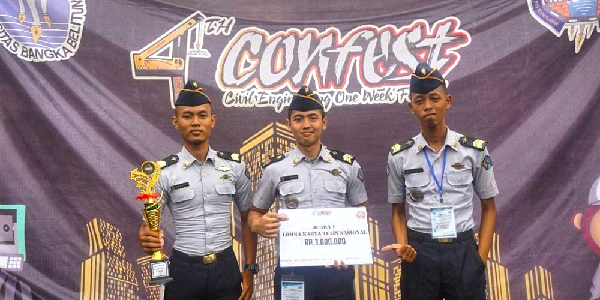

JUARA 1
Lomba Karya Tulis Ilmiah - Universitas Sultan Ageng Tirtayasa
"Perancangan Alat Prekursor Gempa Bumi Kawasan Mata Air Panas Berbasis Internet of Things".

JUARA HARAPAN 1
Lomba Karya Tulis Ilmiah - Universitas Sultan Ageng Tirtayasa
"Rancang Bangun Air Quality Report System untuk Deteksi Gas Karbon Monoksida dan PM2.5".

JUARA 2
Lomba Karya Tulis Ilmiah Nasional SAINTEK EXPO - Universitas Negeri Lampung
"Perancangan Quadcopter untuk Pengukuran Cuaca Berbasis Website".

JUARA 1
Lomba Karya Tulis Ilmiah Nasional - Polbangtan Bogor
"Mini-Weather Station (MI-WES) Sebagai Alat Monitoring dan Automasi Tanaman Sayuran Hidroponik Berbasis Android"

ITARSI FAIR 2018
Untuk Apa ITARSI Fair Diadakan? Teknologi terus menerus berkembang seiring berjalannya waktu. Internet of Things (IoT), Big Data, dan Artificial […]

STMKG sebagai Perwakilan Indonesia pada ASEAN Student Forum
Taruni Aprilia Erlita Lisnawati, atau yang sering disapa April, cukup menjadi sorotan bagi taruna/i instrumentasi STMKG. Pasalnya, beliau menjadi salah […]

Partisipasi Taruna Instrumentasi Dalam KOMURINDO KOMBAT 2017
Kompetisi Muatan Roket Indonesia (KOMURINDO) dan Kompetisi Muatan Balon Atmosfer (KOMBAT) merupakan kompetisi tahunan yang diselenggarakan oleh LAPAN sejak tahun […]

Seminar National Instruments
Senin, 14 Agustus 2017 bertempat di ruang rapat kampus STMKG, diadakan seminar nasional dari National Instrument yang diisi oleh Bapak […]
INTRODUCING ANDROID STUDIO FOR BEGINNER
Pemateri: Taruna Ade H. Fajri
CRIMPING DAN KONFIGURASI DASAR JARINGAN (LAN) DENGAN MIKROTIK
Pemateri: Taruna Elyas Abdhu Mukti Ade Setiawan
OPTIMALISASI IMPLEMENTASI MS WORD DALAM PENULISAN KARYA ILMIAH
Pemateri: Taruna Luhur Hilmantara
DASAR-DASAR MYSQL
Pemateri: Taruna Handi Sutriyan
Ikatan Taruna Instrumentasi Sekolah Tinggi Meteorologi Klimatologi dan Geofisika (ITARSI-STMKG) merupakan wadah bagi taruna-taruni instrumentasi STMKG untuk mengembangkan pengetahuan dan kemampuan akademik di bidang instrumentasi meteorologi, klimatologi dan geofisika serta kemampuan lain dalam mendukung prestasi kerja di lingkungan Badan Meteorologi Klimatologi dan Geofisika (BMKG)